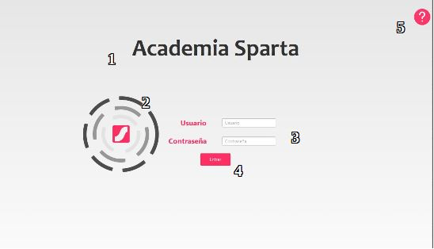
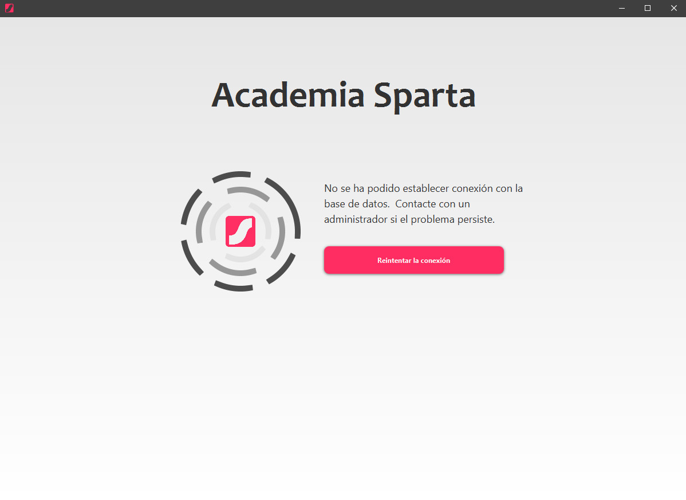

En este apartado podrás encontrar todo lo relacionado entorno a la pantalla de inicio de sesión.
Esta pantalla cuenta con un título (1), una imagen con el logo de la empresa (2), dos campos de texto con sus respectivas etiquetas (3) y un botón con el que el usuario puede interactuar una vez añadidos los campos (4). También se ha añadido un botón en la esquina superior derecha que despliega la ayuda (5).

Se pide un usuario y una contraseña. Esto sirve para acceder a la base de datos en las futuras consultas que se vayan a realizar en la aplicación así como la inserción y eliminación de datos.
Para conseguir acceso de forma exitosa es necesario de que el usuario proporcionado por el usuario exista en la base de datos. De lo contrario saldrá una pantalla que brinda la posibilidad de reconexión y sugiere al usuario que se ponga en contacto con un administrador en caso de que persista el problema.
